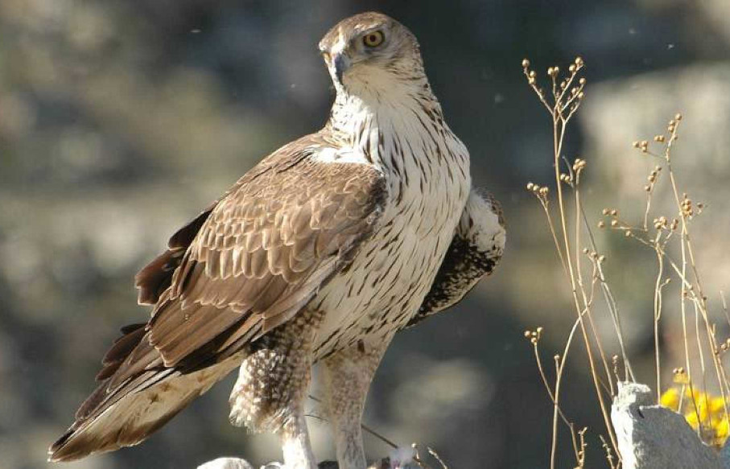

Especies de fauna en peligro de extinción de la Región de Murcia
-
Fartet

Es una especie de pez ciprinodontiforme de la familia Cyprinodontidae. Es una de las especies de vertebrados ibéricos en mayor peligro de extinción
-
Águila perdicera
El águila azor perdicera o águila perdicera es una especie de ave accipitriforme de la familia Accipitridae que habita desde la cuenca mediterránea hasta el sudeste asiático
-
Cernícalo primilla

El cernícalo primilla es una especie de ave falconiforme de la familia Falconidae que se extendía por casi la totalidad de la península ibérica, sur de Francia, sur de Italia, los Balcanes y desde el mar Caspio y Anatolia por gran parte de Asia, también se encuentra en el norte de África desde Marruecos hasta Egipto